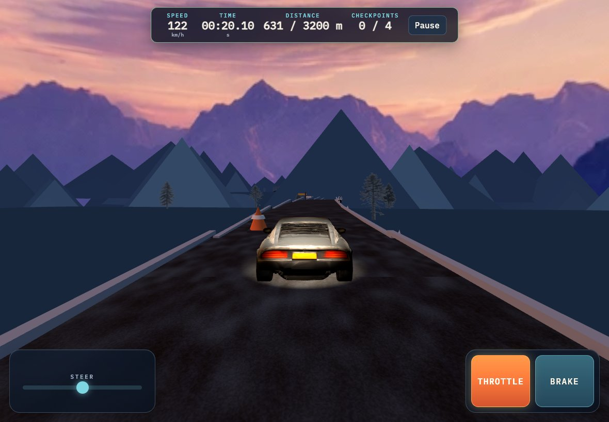

27 November 2026 · 3D browser rally game
Pocket Roads · Sushi 1.8.0
Tenaz ended COMPLETE_WITH_GAPS after 10 h 56 min, 69 sessions and 22 tasks done, with three builder sessions stopped at the turn budget. The second final review left T023 (the toy calibration setup cannot be reached or finished) and T024 (the road reads as a dark unmarked ramp). Played: a worse game than the Qwen 3.8 Flash Next and Qwen 3.8 27B pi-adapted builds on the same brief. Holding throttle alone wins gold; the coupe is always drawn on the centre line while steering moves an unseen collision position, and the hazard posts lining both road edges punish steering (122 contacts, 244 s of penalties in one drive that held a direction).

What was checked
- Runner final state COMPLETE_WITH_GAPS on 27 November 09:17:23.483 UTC: 22 tasks done, T023 and T024 to do. The three bootstrap steps passed on their first attempts (19 task cards, 79 requirements, 7 of them manual). Final review 1 returned CHANGES and added T020 (asphalt that reads as asphalt), T021 (a stage that reads as a dusk alpine rally) and T022 (the coupe sat below the road and nearly black); all three were done. Final review 2 returned CHANGES and added T023 and T024, which Tenaz's two-cycle limit left open.
- Configuration: Hy4-Flash STQ 2.25 bpw on Sushi 1.8.0 (one process for the whole run), Tenaz 0.9.0 built from main 66025f6 (the commit of tag v0.9.0; run.json says only `tenaz 0.9.0` because the binary was built from `git archive`), fx 0.0.18, thinking medium, temperature unset (Sushi applied 0.9), Tenaz context window 131,072, vision on, sandbox on, Tenaz defaults otherwise (turnBudget 40, turn stop at 1.5 times). Brief and seed as the Sushi + Tenaz Pocket Roads run, checked by hash.
- Runner events: three builder sessions stopped at 60 turns (T001 twice, T021 once); each had written a file in its last two tool calls. No compactions, no provider errors, no capacity limits, no image refusals and no reply stopped at the output limit (the largest reply was 10,144 tokens). Four replans added no tasks. 111 of 2,181 tool calls (5.1%) ended in an error, 77 of them shell commands.
- Operator rerun of `verify --all` on a clean clone of the final commit d2d327a, in headless Chrome 158 with --use-mock-keychain: 23 of 23 passed. The checks drive steering, pedals, calibration across a reload, both camera modes, pause, collisions, two full races and replay in a real browser.
- Played by Claude in headless Chrome 158 over CDP with a real GPU (ANGLE Metal, Apple M5 Pro) at 1180x820. Virtual mode, holding W only: gold in 103.05 s (97.05 s plus three contacts at 2 s). Steering right and then left for 7 s each, then holding left to the finish: 122 contacts, 244 s of penalties, bronze after 165.39 s of driving. In the source, the coupe and the chase camera follow the road's centre line; steering shifts and turns the camera and leans the car, while the collision position moves across the road unseen. The road is a dark ramp with no markings, and the guard rails show as long straight beams that cut across bends and hang over the road.
- Physical mode: the ready screen offers Drive, Toy camera, Virtual camera and Sound on, and no control opens the 'Set the marker' panel (the second final review found its Done button is not wired). Tapping the ready screen's background moves the anchor. During a race the marker is hidden and the road is drawn from the anchored camera.
- Vision: 125 read_file calls returned an image (screenshots of the game and the supplied art) in 44 of the 69 sessions.
- Engine metrics: one Sushi 1.8.0 process (started 26 November 22:17:10 UTC) served only this run. Its 1,620 summaries are 6 preflight requests and 1,614 run requests. All 1,614 proxy records match a Sushi summary one to one and in order by (prompt total, output, cached); no (prompt, output, cached) triple repeats in the log. Every request was logged with temp=0.90, thinking=true, max_tokens=16384 and a 16,384-token reasoning budget, and every one ended at end of sequence.
- Memory: Tenaz's 1,436 host samples run from start to end. Sushi held 50 to 52 GiB. Pressure was normal in 1,409 samples, at warning in 26 from 04:45 UTC and critical once, at 06:36 UTC during the first final review; 147.3 GiB were swapped in. The operator reports that the checks' headless Chrome, launched without --use-mock-keychain, raised macOS keychain dialogs again and again.
- Public artifact: the runtime files of the final commit d2d327a (index.html, styles.css, src, assets, vendor; unchanged) and a virtual-mode frame at 1180x820 from Claude's drive. The 16 supplied files match the seed by hash. The project, raw logs, journal and sessions stay in the ignored local archive.
Limits of this evidence
Completion is the runner outcome. The Sushi + Tenaz + fx Pocket Roads setup with Hy4-Flash in place of Qwen 3.8 Flash Next, on Sushi 1.8.0, Tenaz 0.9.0 and fx 0.0.18. Against the pi-adapted run on the same brief and seed: 3.5 times the time and 1.9 times the requests, and a worse game. The operator's verdict is that the result is worse than both Qwen 3.8 Flash Next and Qwen 3.8 27B pi-adapted builds. Tenaz 0.9.0 is the release at tag v0.9.0; its binary reports no commit because it was built from `git archive`.
Configuration
The model, serving engine and agent used for this execution.
| Field | Value | Detail |
|---|---|---|
| Model · primary | Hy4-Flash · primary · reasoning Tenaz thinking medium; Sushi has no medium level for Hy4 and ran every request with thinking on and a 16,384-token reasoning budget (its effort table maps medium to high) | Sushi STQ 2.25 bpw (routed experts EXL3) |
| Checkpoint · primary | Hy4-Flash-Sushi-STQ-2.25bpw | primary model artifact · revision capture-cf5ac35088b7 |
| Runtime | Sushi 1.8.0 · MLX 0.32.3 · One Sushi server process for the whole run, started before init by the workstation's Raycast launcher through launchd: --ctx-size 262144, --ssd-budget-gb 48 with every routed expert resident, --max-tokens 16384, --metrics. Everything else Sushi's default for Hy4: temperature 0.9, top-p 1.0 and no top-k from the pack's generation_config.json (every request logged temp=0.90), 8-bit KV cache, 4096-token prefill chunks, prefix cache on SSD only (20 GB), DFly2 drafts at depth 1 to 6, vision on, one request at a time. Tenaz used it as a load-api engine through its proxy, with a 131,072-token context window of its own. mode | inference engine and exact build |
| Harness | fx over ACP driven by Tenaz 0.9.0 (main 66025f6, tag v0.9.0) 0.0.18 | the agent or client that drove the run |
| Runner | Tenaz 0.9.0 · main 66025f6, tag v0.9.0 | open-source runner, github.com/aartiles/tenaz · how the runner evolved |
| Hardware | Apple MacBook Pro · 64 GB unified memory | hardware recorded for this execution |
| Workload | Pocket Roads · revision 1 | Fresh implementation from the revised brief with the frontier build's runtime assets and Three.js supplied before launch: the same brief (checked by hash) and the same 16 seed files as the Sushi + Tenaz and pi-adapted runs. The local model wrote the specification, task plan, checks and game. Asset generation is outside the run. prompt_tokens counts every request's full prompt, cached or not. |
| Context window | 262,144 tokens | maximum context configured for the serving runtime |
| Repetitions | 1 | executions recorded for this workload; one means an indicative result, not an estimate |
Inference measurements
Engine-side rates for this run. Each figure states its own statistic; figures from different runs are not interchangeable.
| Metric | Value | Definition |
|---|---|---|
| TTFT · median | 2 s | Median engine-reported TTFT across matched responses, from Sushi's per-request metrics as Tenaz's proxy recorded them. · n=1614 · Mean 5.259 s, 90th percentile 12.9 s. Includes the run's cache mix; not a prefill rate. |
| Prefill · median | 308.9 tok/s | Median of Sushi's per-request prefill rate across matched responses, as Sushi reports it, cached input included. · n=1614 |
| Decode · per-request median | 34.4 tok/s | Median of Sushi's per-request decode rate across matched responses. · n=1614 · Range 16.7 to 55.6. |
| Decode · output-weighted | 31.6746 tok/s | Total output tokens divided by the sum of each request's output tokens over its decode rate. · n=1614 |
| Draft acceptance | 74.9174 % | Accepted DFly2 draft tokens divided by drafted tokens, from the Sushi spec-stats line of each matched request. · n=1614 · 273,229 accepted of 364,707 drafted. DFly2, not MTP. |
| Host wired memory · median | 52.175 GiB | Median host wired memory across Tenaz's host samples from start to end of the run. · n=1436 · Maximum 55.02 GiB. Host-wide, includes every process. |
| Server process memory · peak | 52 GiB | Largest Sushi process memory in Tenaz's host samples. · n=1436 · 50.0 GiB at the first sample. |
| Swapped in during the run | 147.262 GiB | Sum of swap-in deltas across Tenaz's host memory samples; host-wide swap I/O, not resident memory. · n=1436 · Memory pressure normal in 1,409 samples, at warning in 26 from 04:45 UTC and critical once (06:36 UTC). Swap in use rose from 16.2 GiB to a maximum of 23.3 GiB. |
| Swapped out during the run | 152.328 GiB | Sum of swap-out deltas across Tenaz's host memory samples. · n=1436 |
| Free memory · sampled minimum | 0.07 GiB | Lowest free memory in Tenaz's host samples. · n=1436 |
Agent session counters
Agent-wide usage totals. These include reasoning, tool calls and waiting, and are not model decode speed.
| Metric | Value | Definition |
|---|---|---|
| Run elapsed | 656.2 min | Session 001 start after the preflight (26 November 22:21:13.521 UTC) to COMPLETE_WITH_GAPS (27 November 09:17:23.483 UTC); includes tools, checks and retries. · n=1 · 10 h 56 min 10 s; no pauses. |
| Agent sessions | 69 sessions | All harness sessions: 3 bootstrap, 31 builder, 29 reviewer, 4 replan and 2 final reviewer. · n=1 |
| Sessions ended early | 3 sessions | Sessions with ok=false. · n=69 · All three stopped at the turn budget (60 of 40 turns): 004 and 005 on T001 and 062 on T021. A fresh session continued each; each had written a file in its last two tool calls. |
| Operator interventions | 0 actions | No pauses, relaunches, configuration changes or edits in the runner log after the first session started. · n=1 · Whether the operator answered the keychain dialogs that the checks' headless Chrome raised is not recorded. |
| Model responses | 1,614 responses | All proxy request records; none empty and none ended in an error. · n=1 |
| Matched model requests | 1,614 requests | Proxy responses matched one to one, in order and uniquely to Sushi summaries by total prompt, output and cached-token triple. · n=1 · 6 preflight summaries unassigned and excluded; every other Sushi summary of the process is matched. |
| Tool calls | 2,181 calls | fx tool calls across all 69 sessions' RPC logs (equal to the journal's sum). · n=69 |
| Tool errors | 111 errors | fx tool calls that ended with is_error, counted in the sessions' RPC logs. · n=2181 · 77 of them shell commands, 18 file reads, 10 edits, 5 searches and 1 subagent; not a count of malformed tool calls. |
| Image tool calls | 125 calls | read_file calls that returned an image (screenshots of the game and the supplied art). · n=2181 · In 44 of the 69 sessions. |
| Context compactions | 0 compactions | Compaction count across all session records. · n=69 |
| Replies cut at the output limit | 0 requests | Replies that stopped at the 16,384-token output limit. · n=1614 · Every reply ended at end of sequence in the Sushi log; the largest had 10,144 tokens. |
Context and token counters
Token totals as reported by the harness or engine. Cached and cumulative figures are not additive with fresh input.
| Metric | Value | Definition |
|---|---|---|
| Maximum prompt context | 86,650 tokens | Maximum prompt input across matched responses; not the configured server window. · n=1614 |
| Cumulative input | 62,250,168 tokens | Sum of total prompt tokens across matched responses, including repeatedly reused context; not unique input. · n=1614 |
| Cached input | 58,978,291 tokens | Sum of prompt tokens Sushi restored from its SSD prefix cache for matched responses. · n=1614 |
| Fresh input | 3,271,877 tokens | Total prompt input minus cached input for matched responses. · n=1614 |
| Output tokens | 716,244 tokens | Sum of output tokens across matched responses, reasoning included. · n=1614 |
| of which reasoning output | 414,452 tokens | Reasoning tokens reported by the proxy, part of the output tokens. · n=1614 · The largest per request was 5,933, under the 16,384-token reasoning budget. |
| Prompt-cache token share | 94.744 % | Cached prompt tokens divided by total prompt tokens, weighted by tokens across matched responses. · n=1614 |
Recorded check counters
Counts from the checks recorded with this run.
| Metric | Value | Definition |
|---|---|---|
| Tasks completed | 22 tasks | Final task cards marked done; T023 and T024, added by the second final review, were left to do. · n=24 |
| Tasks still pending | 2 tasks | Todo cards in the final backlog. · n=24 |
| Reviews returning changes | 6 reviews | Task review verdicts returning CHANGES: T003, T010, T012 and T021 once, T016 twice. Both final reviews returned CHANGES. · n=28 · One more T012 review recorded no verdict and was run again. |
| Project checks passing | 23 checks | Checks passing in `verify --all`, rerun by the operator on a clean clone of the final commit in headless Chrome. · n=23 · Model-written checks, not an independent acceptance suite. |
Request records & provenance
1,614 numeric request records in proxy order, each matched one to one to a Sushi summary by total prompt, output and cached tokens. Prefill and decode rates and the DFly2 spec-stats (mtp_* fields: attempts, accepts, drafted and per_draft_pct) come from Sushi's log; TTFT from Sushi's per-request metrics as Tenaz's proxy recorded them. Preflight summaries are excluded. No prompts, tool results, session identifiers or local paths are included.
Run ID: 2026-11-27-hy4-flash-sushi-v180-225bpw-tenaz-090-fx-pocket-roads
One execution, with checks transcribed from the retained record. A completed session is not a quality score. Measurement method · All runs